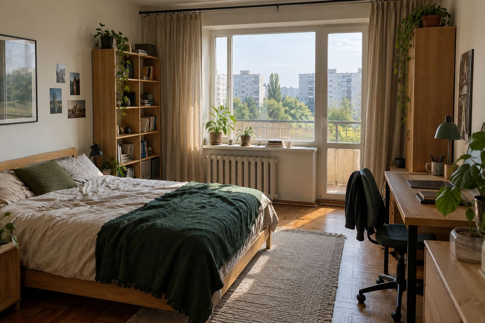

Кімната в 3-кімнатній
Підселення
8 000 грн/міс
Перевірено частковоВідеодзвінок 3 серп. · підтверджено телефон
Не переказуй гроші, поки не побачиш кімнату наживо.
Спершу — коротка анкета сумісності (3 кроки), вона збережеться у профілі.
У прототипі чернетка зберігається лише в цьому браузері.
Що саме перевірено
- Відеодзвінок із мешканцями проведено 3 серпня
- Номер телефону підтверджено
Особу не підтверджено Договір оренди не перевірено
Про кімнату
- Заїзд
- з 1 жовтня
- Кімната
- окрема, 15 м², двоспальне ліжко й робочий стіл
Хто зараз живе
Ігор, 26
Інженер, працює в офісі, рано встає. Не курить.
Данило, 28
Тренер у спортзалі, вдома здебільшого ввечері. Тварин немає.
Повний профіль Ігоря в прототип не входить.
Побажання до співмешканця
Опис від мешканців
Шукаємо третього сусіда чи сусідку. Квартира біля Дніпра, до метро «Мінська» близько 10 хвилин пішки. Любимо порядок на кухні: прибираємо щодня по черзі. Комунальні ділимо на трьох.